Hailing from Kerala, India the land fondly known as "God’s Own Country," I've cultivated a multifaceted career that mirrors the vibrancy of my homeland. I'm currently flexing my tech muscles as a software engineer at Cisco Systems, where the world of zeros and ones meets creativity and innovation.
My love for design is not just a passion; it's a mission. I'm on a quest to harness design, creativity, and tech prowess to revolutionize healthcare sector. It's not just a job; it's a calling to make the world a little better, one pixel at a time.
Armed with a Bachelor's in Electronics and Electrical Engineering, my work landscape is as diverse as it gets! From digital electrical system design to AI, graphic design, UX research, and web development – I've dabbled in it all. My mantra? Try first, judge later. This hands-on approach, fueled by a minor in Product Design, empowers me to blend user-centric thinking with even the most intricate backend solutions.
Sports have always been a passion of mine. Growing up, cricket and volleyball were my go-to games. At 15, I discovered basketball and instantly fell in love with it. I've competed in state and national tournaments, and currently, I'm the point guard for both the Cisco Corporate team and St. Raphael's Basketball Club. My favorite team is the Dallas Mavericks. Kyrie Irving, my childhood hero and favorite player, joining the Mavs was a dream come true and a moment of sheer excitement for me. I also admire the playstyles of Tyrese Haliburton, Nikola Jokic, Luka Doncic, and Kyrie Irving.
 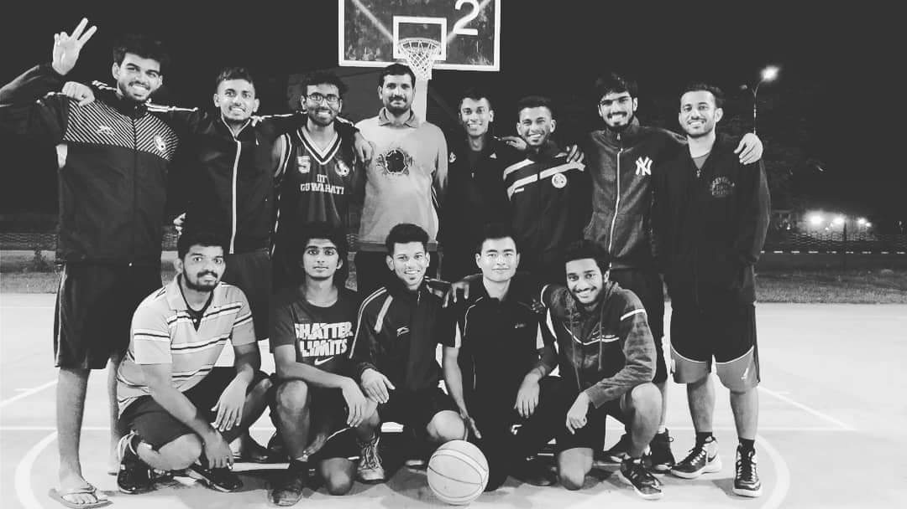
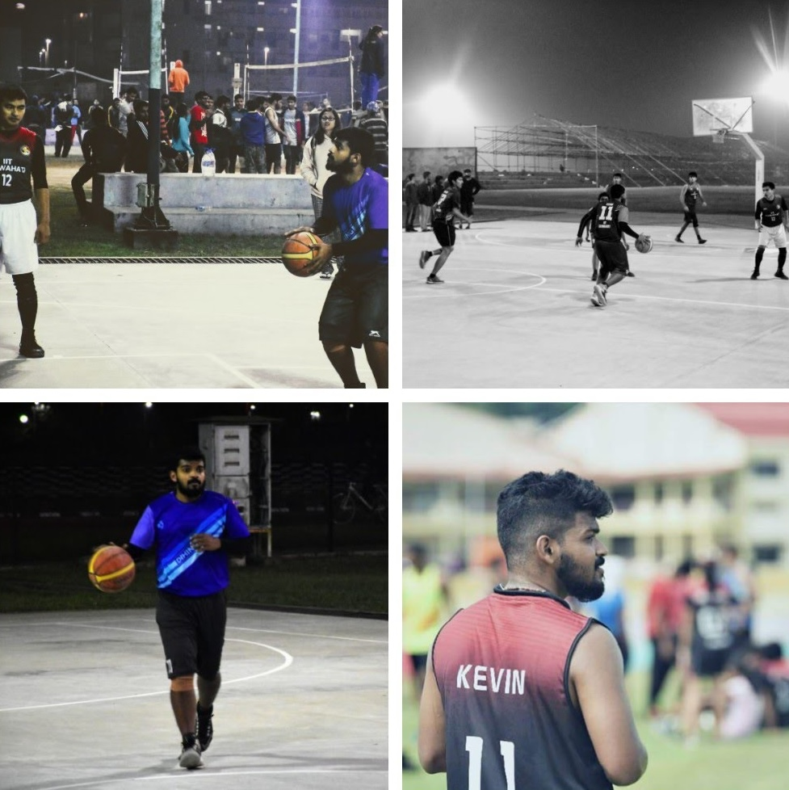
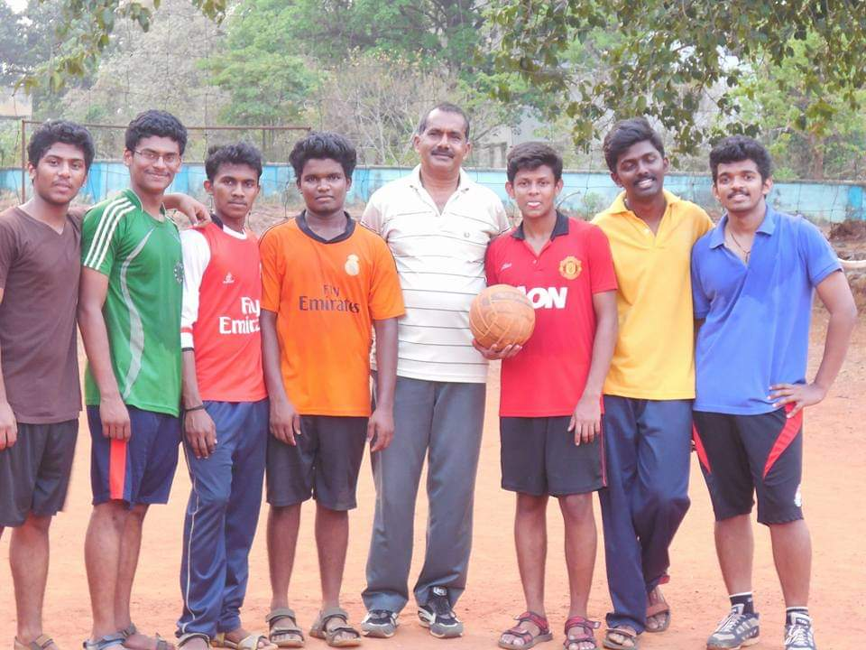
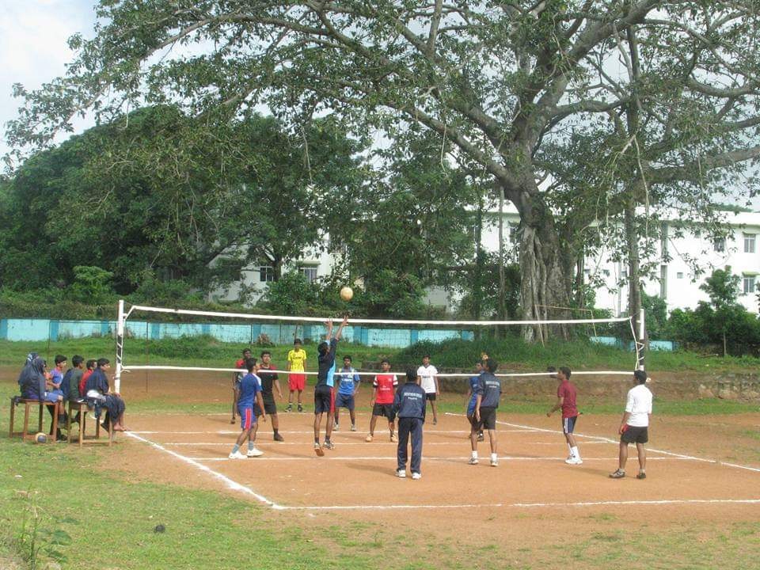
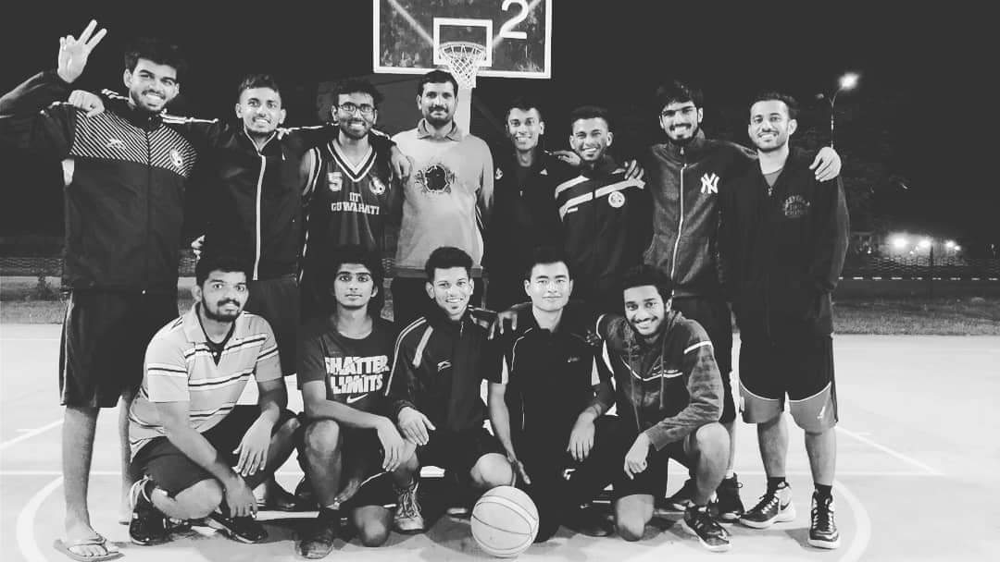
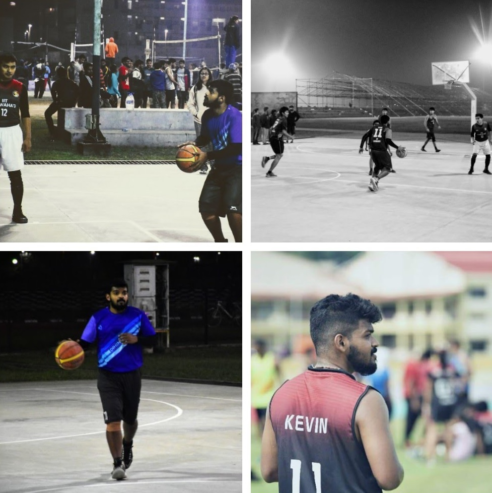
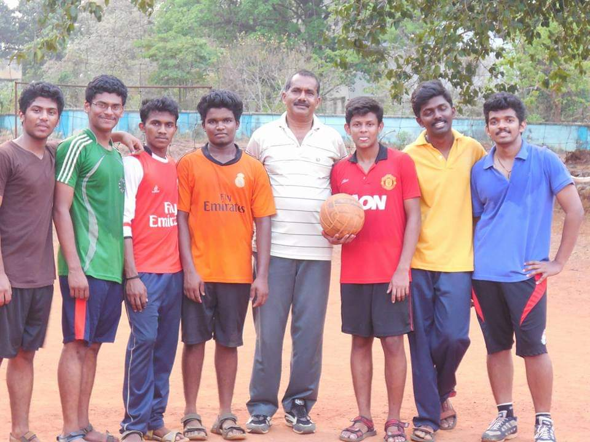
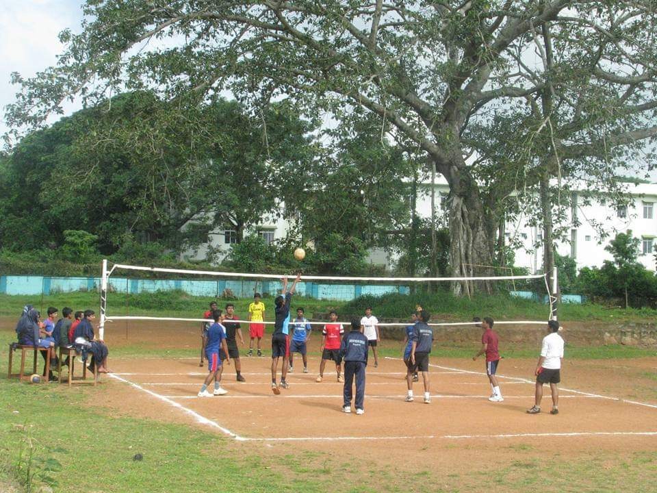
Away from the digital screens, my camera is my loyal companion. Capturing people's smiles and immortalizing their happiest moments is my own little way of spreading joy.


 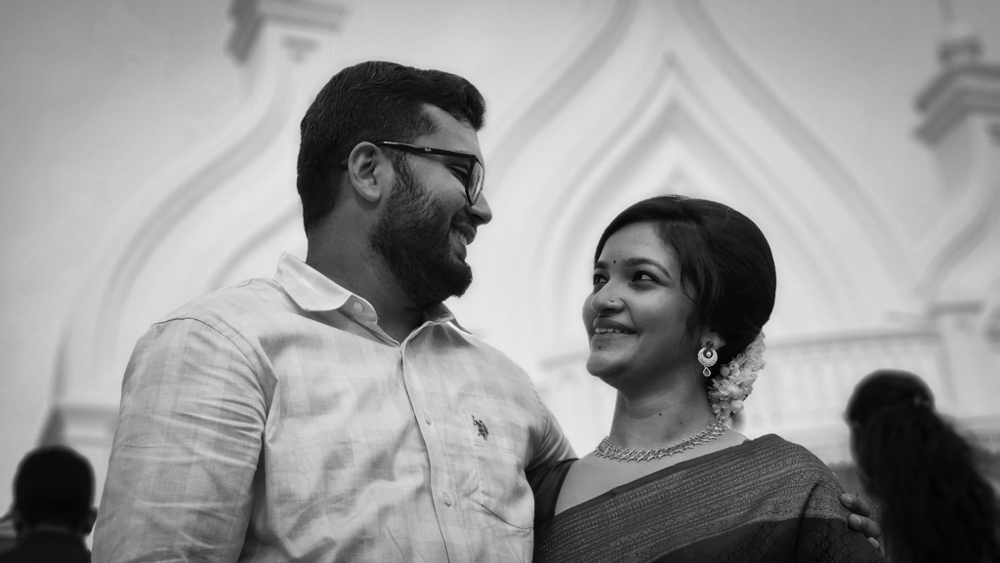
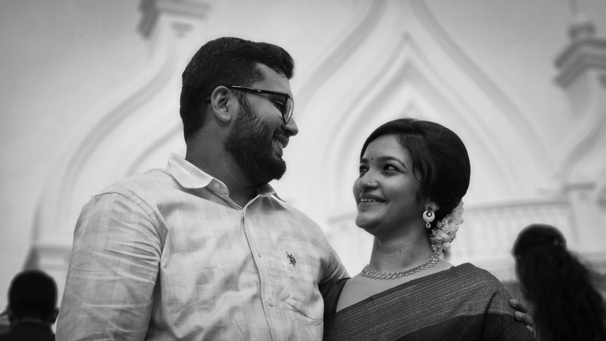

 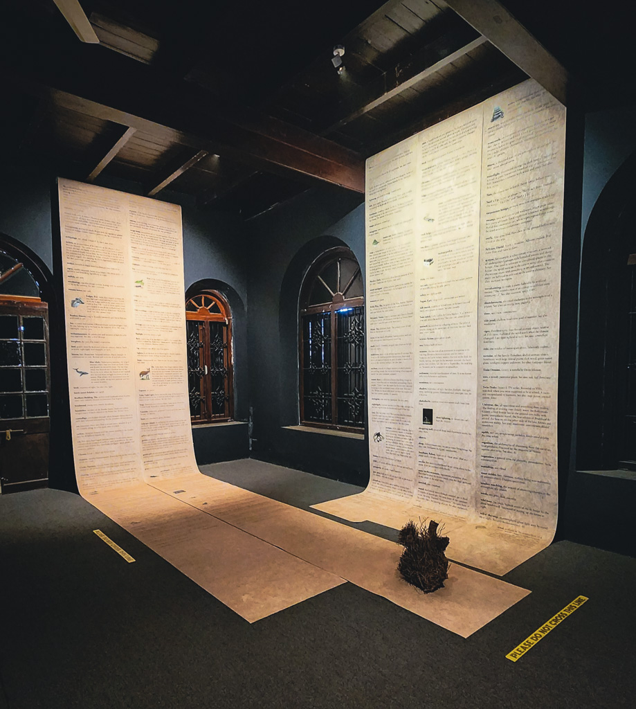
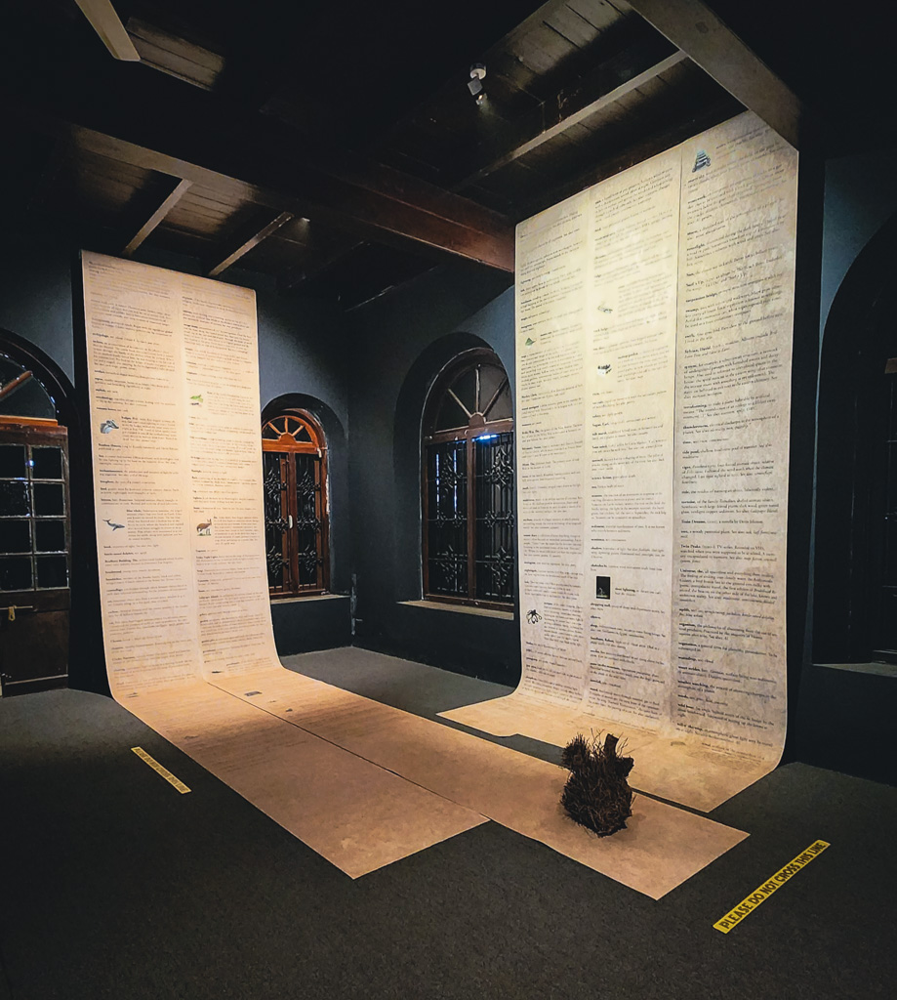
My downtime is all about exploring worlds through books and podcasts. Whether it's delving into history, technology, sports, or unwinding with some light-hearted fiction, I'm always up for a good story.
My love for exploration isn't confined to books and stories. I've ventured to places like Tawang, Meghalaya, Shillong, Delhi etc covering many enchanting locales across India. My journey also took me to the serene landscapes of Bhutan, and I eagerly look forward to expanding my horizons with more travels.
My imagination often finds its way onto paper through doodling, logo design, and branding. This blend of creativity and tech-savviness has now steered me towards product design since 2022 – a thrilling new chapter in my career.
My discipline and leadership skills were honed in my National Cadet Corps days during school, experiences that continue to shape my approach to life and work.

So, that's a snapshot of me – a tech enthusiast, design lover, sports fanatic, photography buff, avid reader, and a perpetual learner. I believe every challenge has a solution, and I'm all about strategizing and planning to tackle problems head-on.
Thanks for dropping by! Dive into my portfolio to see where creativity meets technology, and let's make something awesome together!